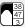
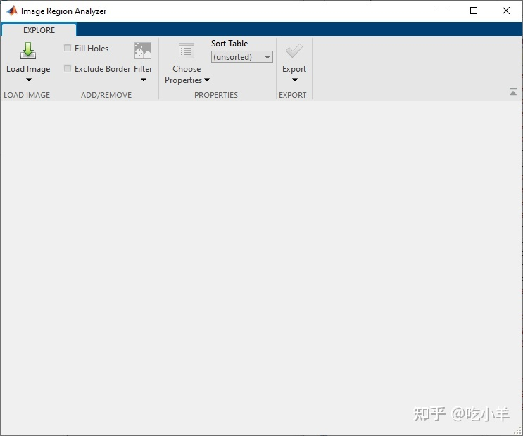
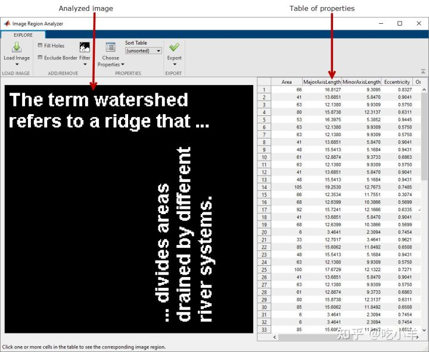
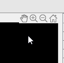
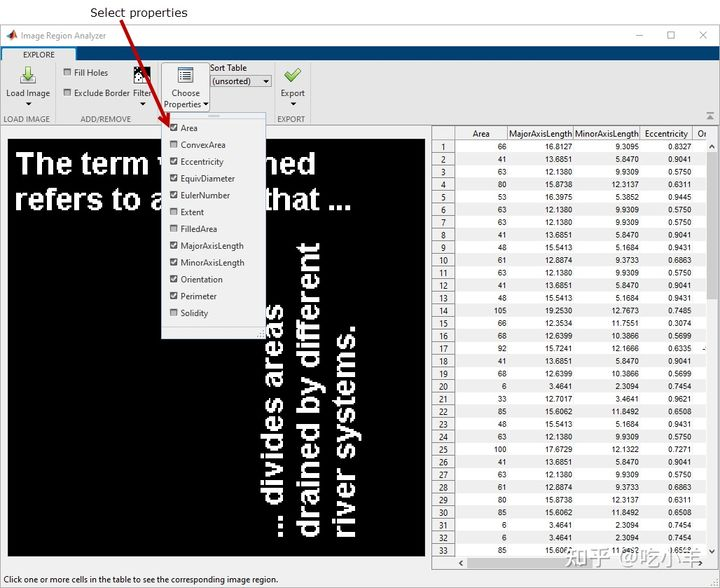
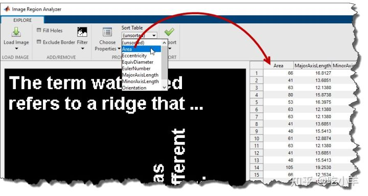
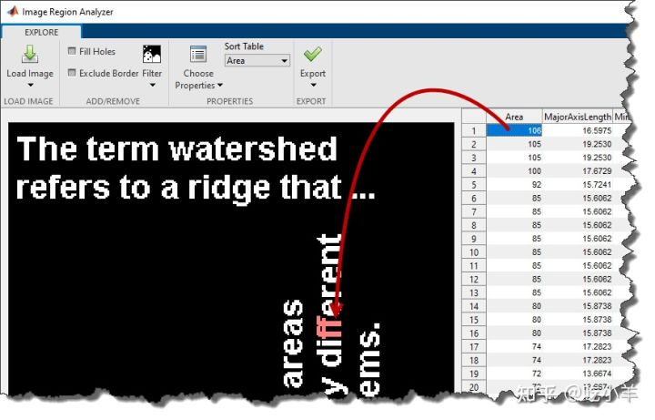

Home
本示例说明如何使用Image Region Analyzer应用程序计算二值图像中区域的属性。此示例查找图像中按面积测量的最大区域。
将二进制图像读入 MATLAB 工作区。
BW = imread('text.png');
从 MATLAB 工具条中打开Image Region Analyzer应用程序。在应用程序选项卡上的图像处理和计算机视觉部分，单击图像区域分析器 

在应用程序工具条上，单击加载图像，然后选择从工作区加载图像以将图像从工作区加载到应用程序中。在从工作区导入对话框中，选择您读入工作区的图像，然后单击确定。
您还可以使用imageRegionAnalyzer函数从命令行打开应用程序，指定要分析的图像：imageRegionAnalyzer(BW);。
图像区域分析仪应用程序显示所选的图像和表，其中每一行是图像中识别的区域，每个列是区域的属性，如面积，周长，和取向。（图像区域分析器应用程序使用regionprops函数来识别图像中的区域并计算这些区域的属性。）

要浏览图像，请将光标移到图像上以访问平移和缩放控件。

该应用程序计算的属性比它最初包含在表中的属性要多。要查看表中的其他属性，请单击选择属性并选择要查看的属性。该应用程序会自动更新表格，为每个属性在表格中添加一个新列。

要探索图像的属性，请对表中的信息进行排序。最初，应用程序按照它找到的顺序列出属性，从图像的左上角开始。要更改排序顺序，请在应用程序工具条的“属性”部分中，单击“排序表”并选择要排序的属性。例如，要查找图像中最大的区域，请对Area属性进行排序。图像区域分析器应用程序按大小排序表。

要查看图像中面积最大的区域，请单击表中的项目。该应用程序突出显示图像中的相应区域。

======================================================================
我的测试结果及程序
下面是我测试的代码：

注：本文根据MATLAB官网内容修改而成。